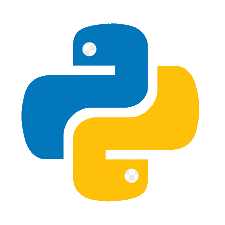
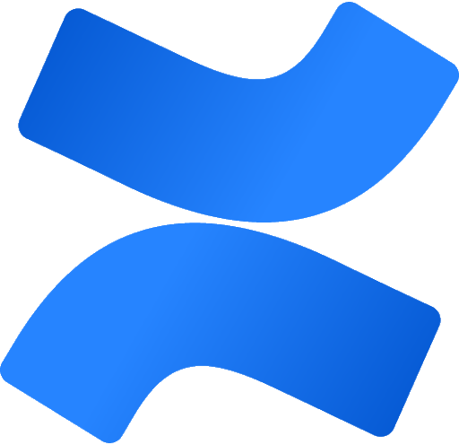
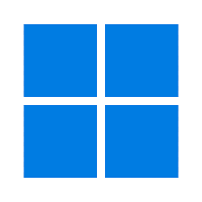
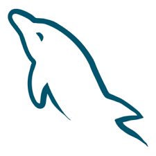
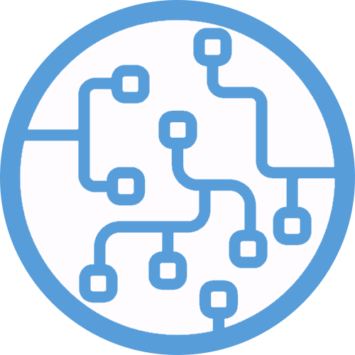
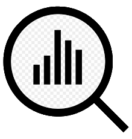
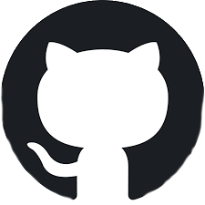

Who is Teemu?
I am a software developer in my early twenties from Hämeenlinna, with a great passion for coding and software development! I am currently in my second year of studying Business Information Technology at HAMK. I am proactive and eager to develop functional and reliable solutions in the field of software development and programming. I am particularly interested in software testing and back-end development, as well as the challenges they present!
Background Information
My interest in computers and their software began in the 9th grade when we had the opportunity to take an ICT course. The course introduced us to the basics of HTML and how websites work, as well as a general overview of Windows. I studied to become an IT specialist in vocational school - we built websites, worked on group projects, learned Unreal Engine, and assembled computers with the guidance of our teachers. I built my first personal computer with my father's help when I was 14 years old.
Education
Since fall 2023, I have been studying Business Information Technology at Häme University of Applied Sciences (HAMK), specializing in programming, web development, and particularly back-end technologies. I have learned many new and useful skills. In many projects, I have used version control (Git) and Scrum, so I have become familiar with them.
My Skills
Alongside my studies, I have acquired various skills and programming languages.
Here are some of them:
- Python 
- Scrum basics
- Jira
- Confluence 
- Robot Framework
- Operating System Basics (Windows) 
- Java OOP
- MySQL 
- Machine Learning (KNN, K-Means, SVM, Linear Regression) 
- WordPress
- Data Analysis with Python (matplotlib, pandas, NumPy) 
- GIT 
Projects
Static Website
A school project where we developed a website for a fictional client using HTML, CSS, and PHP.
RepositoryLejosEV3
A school project where we programmed a LejosEV3 LEGO robot to follow a color line and avoid obstacles. We also programmed the robot to receive commands wirelessly through a web interface. Technologies used: Java, REST, HTML, CSS.
Automation Robotics
A school project where we use UiPath and Robot Framework to automate data retrieval from PDF invoices into a database.
Repository